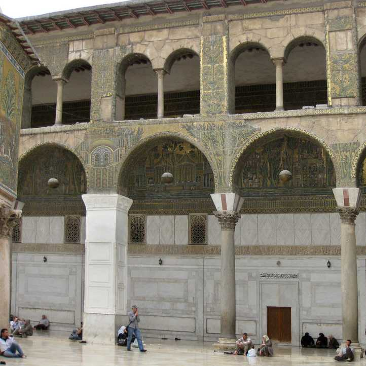

View Here
CREDITS
Work(s) Featured
Cite This Multimedia Work
creative commons - Attribution-NonCommercial-ShareAlike 4.0 International (CC BY-NC-SA 4.0) Summary Legal
Multimedia Sources
MORE...
Essay: A Mosaic Garden, Syria 705-715
For Arab chroniclers the Great Mosque of Damascus, was one of the wonders of the world (Flood, 5). Built in 710 by the often infamous al-Walid this mosque would become the first purpose built Islamic religious structure and a central part of the city’s urban identity. The mosaics on the west arcade would become one of the key reasons for the mosque’s status as a wonder of the world. Initially a Roman temple and later a Christian basilica it was transformed into a visual argument for the power of the Umayyad Caliphs and the redemptive nature of Islam (Flood, 1).
The framing and materiality of the mosaics decorating the Great Mosque of Damascus create a sense of unity through the use of light and shadow. The mosaics themselves are incredibly reflective due to the extensive use of gold tesare. They shimmer in the bright sun, immediately drawing the eye. The mosaics are framed by panels of white marble which continue the sensation of lightness but provide a necessary contrast. The carvings in low relief serve as a subtle embellishment and introduce a three-dimensional quality. Furthermore the use of geometric patterning in both the panels and the mosaics create a shared visual language which unifies the picture plane across the different materials.
Reality and idealism are blended in this fantastical landscape. Colour variation provides much of the detail and modeling in this mosaic in a variety of ways. The garden-city is situated next to a flowing river picked out in dark blue tiles with fine white lines to represent the quick flowing stream. The tall tree trunks, branches and massive canopy of leaves are outlined in dark green and filled with a lighter, warmer green that sits between the pure gold of the background and the cool outlines. This technique is found in Byzantine mosaics as well as in later Byzantine inspired decorative work in both manuscripts and decorative objects. In the gaps between the trees, an unidentifiable, idealized city-scape stands in the distance. Art-historians have argued that it represents an view of Damascus or paradise but the most compelling argument claims that the architectural elements should be read as a merging of the two. This blended landscape suggests ties between the earthly and spiritual unified by the Caliph al-Walid (Flood, 86). The centerpiece of the image is a large structure that has been posited as a representation of the Great Mosque of Damascus. This identification rests on the similar plan of a two storied building with a tower. In representing the mosque within the architectural space of the mosque the artisans highlight the connection of the Great Mosque of Damascus and salvation made possible through al-Walid’s extensive and expensive patronage throughout the Islamic cultural sphere. Thus this merging of the city and paradise acts as a justification for the space’s lavish nature and the Umayyad Caliph’s use of luxury (Flood, 239).
The Great Mosque of Damascus as the first purpose built religious space in the city was a powerful symbol of Islamic identity within the city. Artisans used the iconography of paradise in an attempt to convert or validate the beliefs of the inhabitants of Damascus as they gazed upon the mosaics (Flood, 225). Flood argued that the meaning of art changes depending on the viewer. Flood argued that for a Muslim audience the city in the garden might represent paradise and the benefits brought by the Umayyad Caliphs. For non-Muslims it might function as an argument for conversion or the power of the Umayyad Caliphs. Thus the shared visual language of paradise allows for multilevel messaging for the diverse inhabitants of Umayyad Damascus.
In addition to using a shared set of visual codes the Umayyads also shared craft techniques with their major rivals, the Byzantine Empire. As newcomers, the Umayyads wanted to impress the Byzantines with their artistic and cultural productions through innovation and adaption. As a diplomatic gesture the Byzantine empire sent the Umayyad caliph skilled artisans who may have had a hand in the design and the construction of the mosaics of the Great Mosque of Damascus (Flood, 20) The use of Byzantine techniques and craftsmen did not express their dependence but their ability to create works of art equal to their more established rivals. This relationship was embroidered into the apocryphal story that the appearance of the mosque was so striking that the Byzantine emperor was forced to acknowledge Muslim superiority (Flood, 21). The desire for acclaim is also borne out by the importance of the ceremonial use of the Great Mosque of Damascus during the Umayyad period (Flood, 181). The mosque was reached by a long promenade, where merchants would display their most luxurious goods to emphasize the wealth and sophistication of the Umayyad empire (Flood, 157). Once the mosque was in view a ceremonial entrance and massive gate would awe the viewer with the monumentality of the site while the exterior mosaics would dazzle the viewer through the play of light on gold. The importance of this monument as both a piece of art and symbol of the power of the Umayyads and later the Abbasids is unparalleled and its messages to his subjects and his rivals showcase the significance of art in the world of ideas.
SHARE

You can also use the menu in your browser to share.